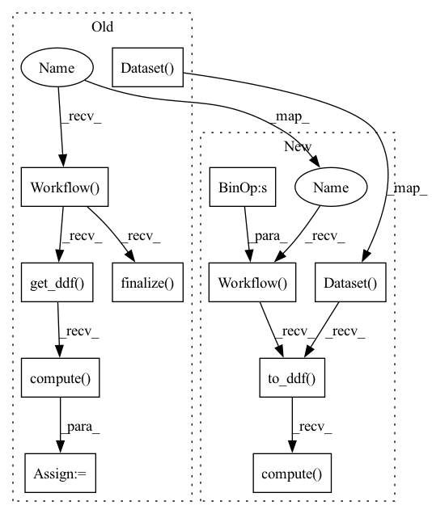

Pattern ID :41592

Before Change
cont_names = []
label_name = ["Post"]
processor = nvt.Workflow(cat_names=cat_names, cont_names=cont_names, label_name=label_name)
processor.add_preprocess(ops.HashBucket(num_buckets=10))
processor.finalize()
processor.apply(nvt.Dataset(df), output_format=None)
df_out = processor.get_ddf().compute(scheduler="synchronous")
// check to make sure that the same strings are hashed the same
authors = df_out["Authors"].to_arrow().to_pylist()
assert authors[0][0] == authors[1][0] // "User_A"
After Change
)
cat_names = ["Authors"] // , "Engaging User"]
dataset = nvt.Dataset(df)
hash_features = cat_names >> ops.HashBucket(num_buckets=10)
processor = nvt.Workflow(hash_features)
processor.fit(dataset)
new_gdf = processor.transform(dataset).to_ddf().compute()
// check to make sure that the same strings are hashed the same
authors = new_gdf["Authors"].to_arrow().to_pylist()
assert authors[0][0] == authors[1][0] // "User_A"
In pattern: SUPERPATTERN
Frequency: 3
Non-data size: 11
Instances
Fragment ID: 116905573
Project Name: nvidia/nvtabular
Commit Name: 4c92dffac4354d816178264bcfcdec722db2ec1c
Time: 2021-01-05
Author: github@benfrederickson.com
File Name: tests/unit/test_ops.py
M Class Name: AnonimousClass
N Class Name: AnonimousClass
M Method Name: test_hash_bucket_lists(1)
N Method Name: test_hash_bucket_lists(1)
M Parent Class:
N Parent Class:
M File Name: tests/unit/test_ops.py
N File Name: tests/unit/test_ops.py
M Start Line: 357
M End Line: 372
N Start Line: 182
N End Line: 195
'>
Before Change
cont_names = ["Cost"]
label_name = ["Post"]
processor = nvt.Workflow(cat_names=cat_names, cont_names=cont_names, label_name=label_name)
processor.add_preprocess(
ops.JoinGroupby(columns=groups, out_path=str(tmpdir), stats=["sum"], cont_names=["Cost"])
)
processor.finalize()
processor.apply(nvt.Dataset(df), output_format=None)
df_out = processor.get_ddf().compute(scheduler="synchronous")
if isinstance(groups, list):
// Join on ["Author", "Engaging-User"]
assert df_out["Author_Engaging-User_Cost_sum"].to_arrow().to_pylist() == [
After Change
}
)
groupby_features = groups >> ops.JoinGroupby(
out_path=str(tmpdir), stats=["sum"], cont_names=["Cost"]
)
workflow = nvt.Workflow(groupby_features + "Post")
df_out = workflow.fit_transform(nvt.Dataset(df)).to_ddf().compute()
if isinstance(groups, list):
// Join on ["Author", "Engaging-User"]
assert df_out["Author_Engaging-User_Cost_sum"].to_arrow().to_pylist() == [
'>
Fragment ID: 116905572
Project Name: nvidia/nvtabular
Commit Name: 4c92dffac4354d816178264bcfcdec722db2ec1c
Time: 2021-01-05
Author: github@benfrederickson.com
File Name: tests/unit/test_ops.py
M Class Name: AnonimousClass
N Class Name: AnonimousClass
M Method Name: test_joingroupby_multi(2)
N Method Name: test_joingroupby_multi(2)
M Parent Class:
N Parent Class:
M File Name: tests/unit/test_ops.py
N File Name: tests/unit/test_ops.py
M Start Line: 906
M End Line: 917
N Start Line: 516
N End Line: 521
'>
Before Change
cont_names = []
label_name = ["Post"]
processor = nvt.Workflow(cat_names=cat_names, cont_names=cont_names, label_name=label_name)
processor.add_preprocess(ops.Categorify(out_path=str(tmpdir), freq_threshold=freq_threshold))
processor.finalize()
processor.apply(nvt.Dataset(df), output_format=None)
df_out = processor.get_ddf().compute(scheduler="synchronous")
// Columns are encoded independently
if freq_threshold < 2:
assert df_out["Authors"].to_arrow().to_pylist() == [[1], [1, 4], [2, 3], [3]]
After Change
cat_names = ["Authors", "Engaging User"]
label_name = ["Post"]
cat_features = cat_names >> ops.Categorify(out_path=str(tmpdir), freq_threshold=freq_threshold)
workflow = nvt.Workflow(cat_features + label_name)
df_out = workflow.fit_transform(nvt.Dataset(df)).to_ddf().compute()
// Columns are encoded independently
if freq_threshold < 2:
assert df_out["Authors"].to_arrow().to_pylist() == [[1], [1, 4], [2, 3], [3]]
'>
Fragment ID: 116905571
Project Name: nvidia/nvtabular
Commit Name: 4c92dffac4354d816178264bcfcdec722db2ec1c
Time: 2021-01-05
Author: github@benfrederickson.com
File Name: tests/unit/test_ops.py
M Class Name: AnonimousClass
N Class Name: AnonimousClass
M Method Name: test_categorify_lists(2)
N Method Name: test_categorify_lists(2)
M Parent Class:
N Parent Class:
M File Name: tests/unit/test_ops.py
N File Name: tests/unit/test_ops.py
M Start Line: 731
M End Line: 738
N Start Line: 359
N End Line: 365